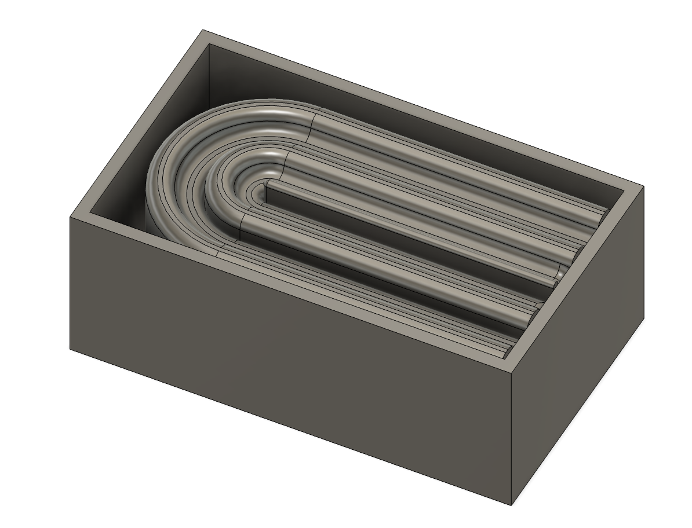

<div class="textcontainer">
<p class="margin"> </p>
<h3>Week 8: CNC Milling</h3>
CNC week might have been my favorite week so far! It was a nice interlude between lots of technical coding/microprogramming with sooo many possibilities of things to make and ways to process designs. <br>
<br>
<h5>idea 1: candle</h5>
When we looked at the examples in class of milling a wax positive of Voltaire(?), I was inspired to make a custom fun-shaped candle using wax milling and molding and casting. So I designed a small rainbow shaped candle <a href="https://www.pinterest.com/pin/871939177842989954/">inspired by pinterest</a> with the arches at different 3D levels (<a href="./candlev1.stl" download>here is my STL file</a>). <br>
<p class="margin"> </p>
<div class="flexrow">

</div><br>
Its dimensions would have used the whole wax block both in the XY dimension and in depth. BUT this plan was struck down when Kassia told me I could only mill something with a depth less than that of the end mill itself (so the candle could only be 9mm thick). So I switched to another idea but kept the candle in mind.
<br>
<br>
<h5>idea 2: zebrafish chocolate</h5>
I pivoted to a simpler and smaller idea: making a life-sized zebrafish chocolate. I just finished my thesis in a lab that uses zebrafish as an animal model (and that loves chocolate in the break room), so I wanted to make a fun lab-themed surprise. I designed another wax positive mold of a zebrafish inside a box, (download <a href="./zebrafish chocolate v3.stl" download>here</a>) so that I could later pour food-safe silicon into the box to make a chocolate mold. <br>
<p class="margin"></p>
<div class="flexrow">
<img src="zebrafish chocolate.png" alt="screenshot of a CAD of a 2.5D zebrafish enclosed in a box" width="50%">
</div><br>
It took a couple tries to mill this correctly on the SRM-20 machine. I had some issues on where to set the z origin and what size end mills to use for the roughing and finishing passes, but eventually fine tuned it to get a sufficiently detailed mold. On the first 2 attempts I only used a 1/16 inch mill because SRP player told me to, but this didn't end up giving the right amount of detail. The final mill that worked used a roughing pass with a 1/16th square and a finishing pass with a 1/32nd inch round mill. I also used the smooth surface instead of the flat planes setting, but I'm also curious to what it would look like if I used flat planes. I did end up sizing the design up a few centimeters so I didn't have to use the 1/64th inch mill, so the chocolate is a little bigger than life-sized but who's going to complain about more chocolate.
<p class="margin"></p>
<div class="flexrow">
<img src="wax block.jpeg" alt="blue wax block with 3 fish designs etched into it" width="40%">
</div>
<p class="caption">The bottom two attempts didn't turn out- one didn't have enough detail and the other had milled too deep into the design. The top one worked once I changed bit sizes between the roughing and finishing passes!</p><br>
I used the food safe silicone to fill the wax positive and I had a little extra so I also filled the less detailed, smaller fish so I could have 2 sizes of chocolate fish. Here is the result! Some of the lines weren't exactly in the right place from how I designed them in Fusion, so I would have to try a couple more iterations on the machine and become more familiar with the process if I wanted an exact zebrafish chocolate. But I'm happy with this one.<br>
<p class="margin"></p>
<div class="flexrow">
<img src="./silicone pour.jpeg" alt="blue wax block with 3 fish designs filled with liquid silicone" width="30%">
<img src="./silicone mold.jpeg" alt="2 clear silicone molds of zebrafish" width="40%">
<img src="./final fish.jpeg" alt="2 zebrafish shaped chocolates on a white plate" width="30%">
</div>
<p class="caption">The wax mold after I poured silicone into 2 of the fish, the final silicone molds, and the chocolate zebrafish result from pouring melted chocolate into the silicone molds.</p><br>
<h5>back to idea 1: candle</h5>
I was making both the fish and the candle at the same time since I wasn't sure what I would finish first and I wanted to have something ready to fulfill the assignment. So simultaneously, I still wanted to make a candle but I already had CADed two things, so I found this <a href="https://www.thingiverse.com/thing:4038181">baby yoda stl file</a> from thingaverse. Once I make the mold I could theoretically have baby yoda candles in perpetuity. Kassia suggested I resin print him so I could have better resolution than 3D printing so I learned a new skill in resin printing. I haven't made a silicone mold for him yet, but here he is:<br>
<p class="margin"></p>
<div class="flexrow">
<img src="./baby yoda resin.jpeg" alt="clear figure of baby yoda" width="40%">
</div>
<br>
<br>
<h5>final project progress from this week</h5>
Learning CNC gave me a better idea of how to build the pillbox around the circuitry, and how I might use this skill to build the base of the pillbox if it makes more sense than 3D printing in some instances.
</div>